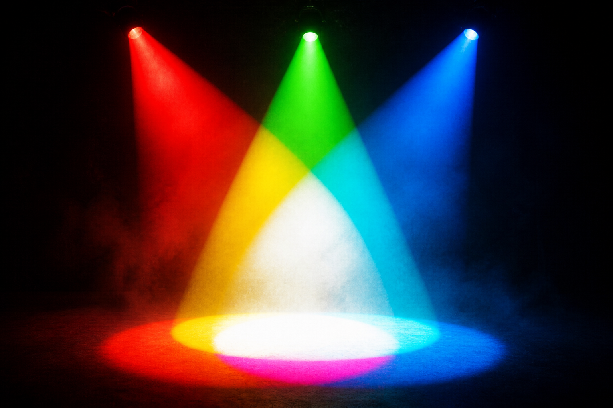
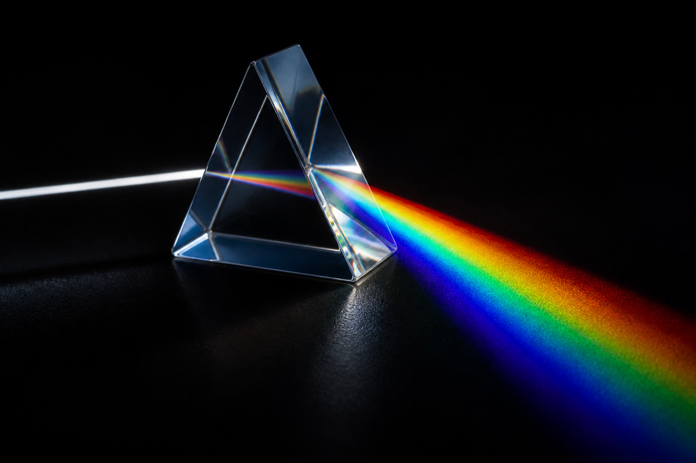

🌈
光線特勤隊
任務三
白光藏著七彩！
一頁直達：舞臺・簡報・搶答・實驗 ｜ 光與顏色（色散・選擇性反射）
🗓️ 本週三堂課・照順序點
📘 三堂教案逐字台詞（Word）
🔔 右下角鈴鐺＝集合口令：拍手節奏＋「光線特勤隊！」→ 學生回「集合！」
課 A白光的祕密第1節 看懂母題｜甲班週一・乙班週三｜色散・選擇性反射（Ka-IV-10、11）
課 B混光魔法・白光大解密第2節 動手探究｜甲班週三・乙班週五第6節｜加色混合・光的三原色
課 C顏色偵探・結案報告第3節 整理應用｜甲班週五・乙班週五第7節｜選擇性反射的生活決定（ah-IV-2）
⭐ 更多體驗

🎭 混光魔法舞臺
按 🔴🟢🔵 燈，物體真的會變色！紅蘋果照綠光竟然變暗
電影感臨場舞臺・素養五段故事線・老師帶課稿・🔵🟠雙軌
🎯 上課一鍵直達
📸 真實互動・拿東西照照看

🪄 顏色魔法相機
開相機→舉起彩色的東西→切換紅／綠／藍光
選擇性反射：紅色的東西在綠光下會變黑・可拍照存證灑花

📸 真實照片體驗館
三稜鏡・彩虹・舞台燈・彩色水果・泡泡
👆 點照片聽名字（中英文）＋科學說明＋音效